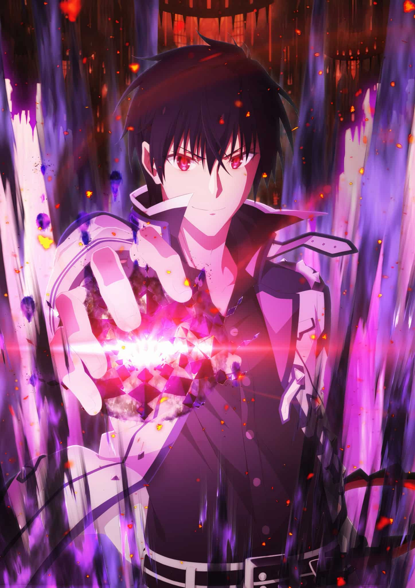

Héros
Anos est le roi demon anos voldigoad reincarné 1000 ans plus tard dans le temp. Il renait en tant qu'enfant surdoué et entre dans une academie
L'academie ou rentre notre héros anos est l'academie qui sert a former le prochain roi démon ou chaque classe de la population a un embleme pour les distinguer